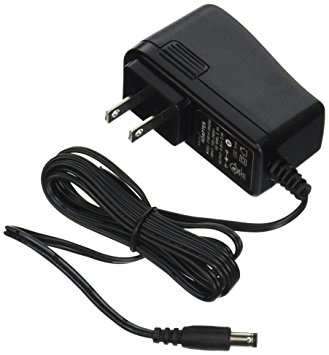
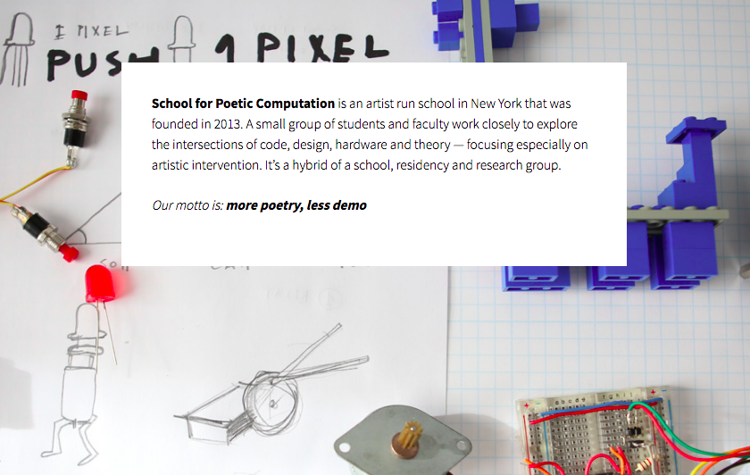
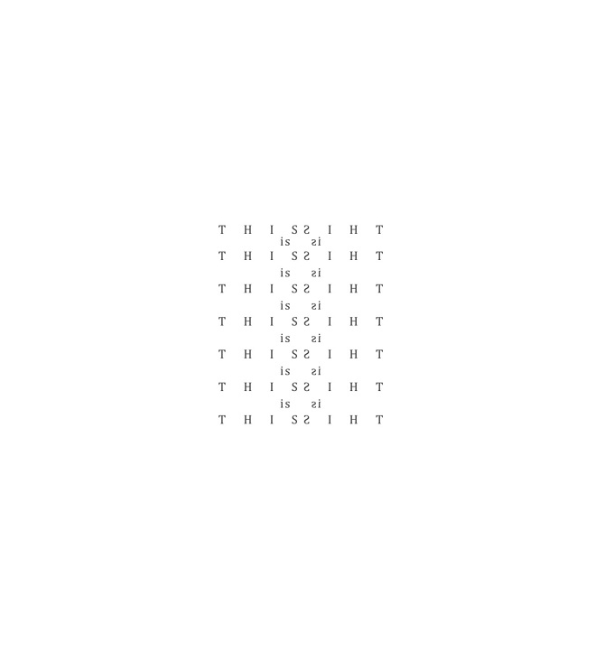

Robotic Arts Intro Fall 2017 (IA277.01)
- Instructor: Lucas Haroldsen (lharoldsen@mica.edu)
- Class Site: yasunaga.work/raif17
- syllabus: syllabus.pdf
- Resources: links.html
10/10: Studio Work Day!
Today is a project workday for Project 1: the midterm
Arduino Review
Take a look at what we have gone over so far if you need!
- Digital Input and Output
- variables
- if else --video
- Analog Input, Serial Print, Threshold --video
- Analog output and tone()
Tips and Tricks
- Powering Arduino --- extensive article here

- Power Adapter: you can use cellphone chargers or computer chargers between 9V and 12V DC and rated for more than 250mA (2.1mm plug, center pin positive)
- Battery: battery pack with 2.1mm plug can be foun in the MICA store. You can use 9V battery to power arduino with 2.1mm plug or Vin pin
- Rechargeable Batteries: here or here
- Wiring and putting it together

- Carving PCB: first method we tried
- Manhattan style: popular style in ham radio context
- Free form This is how Bonnie Crawford works.
- perforated board: Common electronic prototyping method. We have a bunch for the class
- Arduino -- Functions
- Functions is a type of procedure in programing. We can use this to make our code more efficient and better organized
Blink_functions
How was the reading?
Chapter 1: What is poetic about computation? from Poetic Computation by Taeyoon Choi

School for Poetic Computation

BBC DOCUMENTARY : Calculating Ada - The Countess of Computing 2015
[The Analytical Engine] might act upon other things besides number, were objects found whose mutual fundamental relations could be expressed by those of the abstract science of operations, and which should be also susceptible of adaptations to the action of the operating notation and mechanism of the engine...Supposing, for instance, that the fundamental relations of pitched sounds in the science of harmony and of musical composition were susceptible of such expression and adaptations, the engine might compose elaborate and scientific pieces of music of any degree of complexity or extent. What the hell is a design technologist?
You are going to pair up with your neighbor and take a look at your working prototype for your project. As you take a look at your peer's project, consider the following.
Hannah Hiaasen
Jaron Lanier on the origin of computers and binary instruments 1:20
Ada Lovelace
Prototype
HOMEWORK
Project 1: the midterm
Project 1 is due October 24th!
You have two weeks to bring your prototype to finished project.
Documentation Due: October 31st